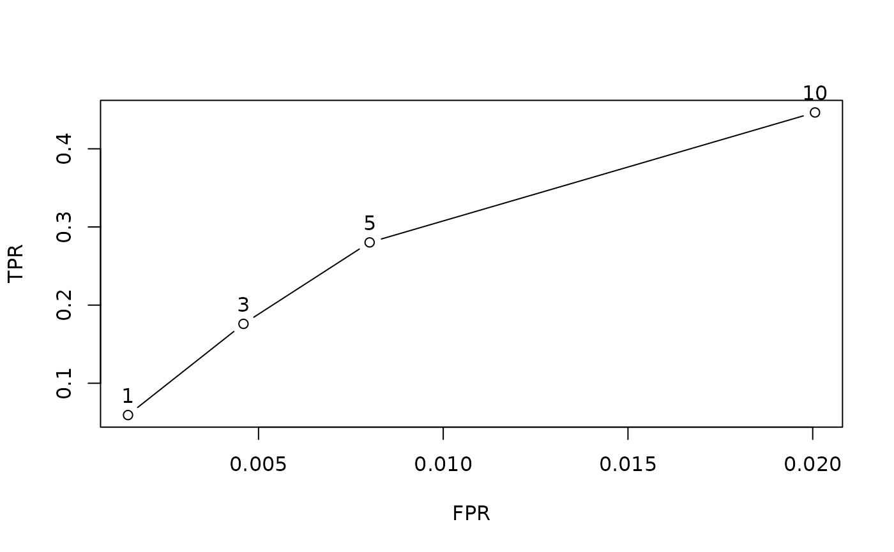
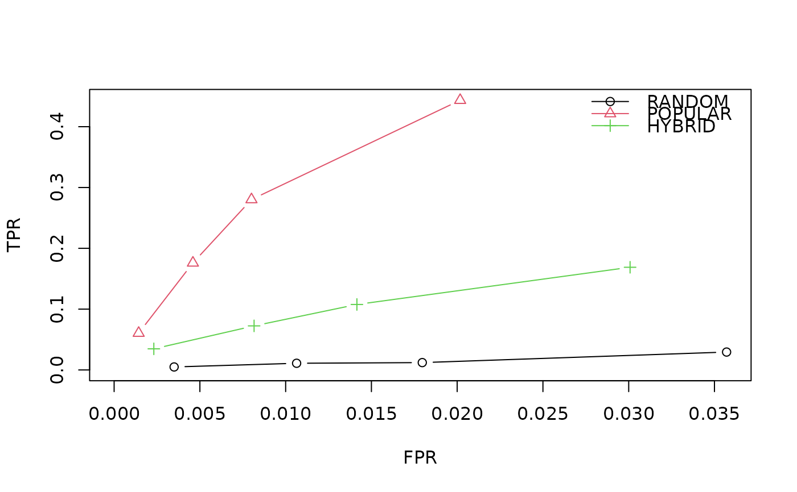

Evaluate a Recommender Models
evaluate.RdEvaluates a single or a list of recommender model given an evaluation scheme and return evaluation metrics.
Usage
evaluate(x, method, ...)
# S4 method for class 'evaluationScheme,character'
evaluate(x, method, type="topNList",
n=1:10, parameter=NULL, progress = TRUE, keepModel=FALSE)
# S4 method for class 'evaluationScheme,list'
evaluate(x, method, type="topNList",
n=1:10, parameter=NULL, progress = TRUE, keepModel=FALSE)Arguments
- x
an evaluation scheme (class
"evaluationScheme").- method
a character string or a list. If a single character string is given it defines the recommender method used for evaluation. If several recommender methods need to be compared,
methodcontains a nested list. Each element describes a recommender method and consists of a list with two elements: a character string named"name"containing the method and a list named"parameters"containing the parameters used for this recommender method. SeeRecommenderfor available methods.- type
evaluate "topNList" or "ratings"?
- n
a vector of the different values for N used to generate top-N lists (only if type="topNList").
- parameter
a list with parameters for the recommender algorithm (only used when
methodis a single method).- progress
logical; report progress?
- keepModel
logical; store used recommender models?
- ...
further arguments.
Details
The evaluation uses the specification in the evaluation scheme to train a recommender models on training data and then evaluates the models on test data.
The result is a set of accuracy measures averaged over the test users.
See calcPredictionAccuracy for details on the accuracy measures and the averaging.
Note: Also the confusion matrix counts are averaged over users and therefore not whole numbers.
See vignette("recommenderlab") for more details on the evaluaiton process and the used metrics.
Value
If a single recommender method is specified in method, then an
object of class "evaluationResults" is returned.
If method is a list of recommendation models, then an object of class "evaluationResultList" is returned.
Examples
### evaluate top-N list recommendations on a 0-1 data set
## Note: we sample only 100 users to make the example run faster
data("MSWeb")
MSWeb10 <- sample(MSWeb[rowCounts(MSWeb) >10,], 100)
## create an evaluation scheme (10-fold cross validation, given-3 scheme)
es <- evaluationScheme(MSWeb10, method="cross-validation",
k=10, given=3)
## run evaluation
ev <- evaluate(es, "POPULAR", n=c(1,3,5,10))
#> POPULAR run fold/sample [model time/prediction time]
#> 1 [0.001sec/0.003sec]
#> 2 [0.001sec/0.003sec]
#> 3 [0.001sec/0.003sec]
#> 4 [0.001sec/0.003sec]
#> 5 [0.001sec/0.003sec]
#> 6 [0.001sec/0.003sec]
#> 7 [0.001sec/0.002sec]
#> 8 [0.001sec/0.002sec]
#> 9 [0.001sec/0.003sec]
#> 10 [0.001sec/0.003sec]
ev
#> Evaluation results for 10 folds/samples using method ‘POPULAR’.
## look at the results (the length of the topNList is shown as column n)
getResults(ev)
#> [[1]]
#> TP FP FN TN N precision recall TPR FPR n
#> [1,] 0.6 0.4 10.9 270.1 282 0.6000000 0.0530812 0.0530812 0.001465211 1
#> [2,] 2.0 1.0 9.5 269.5 282 0.6666667 0.1847991 0.1847991 0.003669918 3
#> [3,] 2.9 2.1 8.6 268.4 282 0.5800000 0.2633504 0.2633504 0.007720709 5
#> [4,] 4.4 5.6 7.1 264.9 282 0.4400000 0.3974017 0.3974017 0.020625232 10
#>
#> [[2]]
#> TP FP FN TN N precision recall TPR FPR n
#> [1,] 0.6 0.4 9.0 272.0 282 0.6000000 0.06714286 0.06714286 0.001470638 1
#> [2,] 1.6 1.4 8.0 271.0 282 0.5333333 0.17476912 0.17476912 0.005143358 3
#> [3,] 2.5 2.5 7.1 269.9 282 0.5000000 0.27322511 0.27322511 0.009183665 5
#> [4,] 4.4 5.6 5.2 266.8 282 0.4400000 0.47569264 0.47569264 0.020561112 10
#>
#> [[3]]
#> TP FP FN TN N precision recall TPR FPR n
#> [1,] 0.8 0.2 10.8 270.2 282 0.80 0.07205299 0.07205299 0.0007366707 1
#> [2,] 2.1 0.9 9.5 269.5 282 0.70 0.18768674 0.18768674 0.0033185528 3
#> [3,] 3.4 1.6 8.2 268.8 282 0.68 0.30242764 0.30242764 0.0058976293 5
#> [4,] 5.5 4.5 6.1 265.9 282 0.55 0.49375584 0.49375584 0.0166232847 10
#>
#> [[4]]
#> TP FP FN TN N precision recall TPR FPR n
#> [1,] 0.5 0.5 10.2 270.8 282 0.5000000 0.04734848 0.04734848 0.001841201 1
#> [2,] 1.6 1.4 9.1 269.9 282 0.5333333 0.15420455 0.15420455 0.005154386 3
#> [3,] 2.7 2.3 8.0 269.0 282 0.5400000 0.25439394 0.25439394 0.008459481 5
#> [4,] 4.7 5.3 6.0 266.0 282 0.4700000 0.44859848 0.44859848 0.019514562 10
#>
#> [[5]]
#> TP FP FN TN N precision recall TPR FPR n
#> [1,] 0.7 0.3 8.7 272.3 282 0.7000000 0.07325758 0.07325758 0.001096227 1
#> [2,] 1.9 1.1 7.5 271.5 282 0.6333333 0.20762626 0.20762626 0.004034810 3
#> [3,] 2.8 2.2 6.6 270.4 282 0.5600000 0.30171717 0.30171717 0.008064213 5
#> [4,] 4.4 5.6 5.0 267.0 282 0.4400000 0.46073232 0.46073232 0.020517444 10
#>
#> [[6]]
#> TP FP FN TN N precision recall TPR FPR n
#> [1,] 0.6 0.4 9.9 271.1 282 0.6000000 0.05859488 0.05859488 0.001469281 1
#> [2,] 2.0 1.0 8.5 270.5 282 0.6666667 0.19363817 0.19363817 0.003669846 3
#> [3,] 3.4 1.6 7.1 269.9 282 0.6800000 0.32701479 0.32701479 0.005867688 5
#> [4,] 4.8 5.2 5.7 266.3 282 0.4800000 0.45017316 0.45017316 0.019098479 10
#>
#> [[7]]
#> TP FP FN TN N precision recall TPR FPR n
#> [1,] 0.5 0.5 9.2 271.8 282 0.5000000 0.05444444 0.05444444 0.001838345 1
#> [2,] 1.6 1.4 8.1 270.9 282 0.5333333 0.17583333 0.17583333 0.005150071 3
#> [3,] 2.8 2.2 6.9 270.1 282 0.5600000 0.30019231 0.30019231 0.008083267 5
#> [4,] 4.6 5.4 5.1 266.9 282 0.4600000 0.48632479 0.48632479 0.019826853 10
#>
#> [[8]]
#> TP FP FN TN N precision recall TPR FPR n
#> [1,] 0.7 0.3 8.2 272.8 282 0.70 0.07742424 0.07742424 0.001096227 1
#> [2,] 1.8 1.2 7.1 271.9 282 0.60 0.20345960 0.20345960 0.004392970 3
#> [3,] 2.7 2.3 6.2 270.8 282 0.54 0.30386364 0.30386364 0.008418273 5
#> [4,] 4.1 5.9 4.8 267.2 282 0.41 0.46371212 0.46371212 0.021601214 10
#>
#> [[9]]
#> TP FP FN TN N precision recall TPR FPR n
#> [1,] 0.4 0.6 9.1 271.9 282 0.4000000 0.0450000 0.0450000 0.002204676 1
#> [2,] 1.6 1.4 7.9 271.1 282 0.5333333 0.1762338 0.1762338 0.005141962 3
#> [3,] 2.6 2.4 6.9 270.1 282 0.5200000 0.2796104 0.2796104 0.008803688 5
#> [4,] 4.3 5.7 5.2 266.8 282 0.4300000 0.4554545 0.4554545 0.020898621 10
#>
#> [[10]]
#> TP FP FN TN N precision recall TPR FPR n
#> [1,] 0.6 0.4 11.3 269.7 282 0.6000000 0.04464646 0.04464646 0.001461191 1
#> [2,] 1.3 1.7 10.6 268.4 282 0.4333333 0.10171717 0.10171717 0.006259114 3
#> [3,] 2.4 2.6 9.5 267.5 282 0.4800000 0.19643939 0.19643939 0.009575286 5
#> [4,] 4.2 5.8 7.7 264.3 282 0.4200000 0.33330808 0.33330808 0.021360676 10
#>
## get a confusion matrices averaged over the 10 folds
avg(ev)
#> TP FP FN TN N precision recall TPR FPR n
#> [1,] 0.60 0.40 9.73 271.27 282 0.6000000 0.05929931 0.05929931 0.001467967 1
#> [2,] 1.75 1.25 8.58 270.42 282 0.5833333 0.17599678 0.17599678 0.004593499 3
#> [3,] 2.82 2.18 7.51 269.49 282 0.5640000 0.28022348 0.28022348 0.008007390 5
#> [4,] 4.54 5.46 5.79 266.21 282 0.4540000 0.44651537 0.44651537 0.020062748 10
plot(ev, annotate = TRUE)

## evaluate several algorithms (including a hybrid recommender) with a list
algorithms <- list(
RANDOM = list(name = "RANDOM", param = NULL),
POPULAR = list(name = "POPULAR", param = NULL),
HYBRID = list(name = "HYBRID", param =
list(recommenders = list(
RANDOM = list(name = "RANDOM", param = NULL),
POPULAR = list(name = "POPULAR", param = NULL)
)
)
)
)
evlist <- evaluate(es, algorithms, n=c(1,3,5,10))
#> RANDOM run fold/sample [model time/prediction time]
#> 1 [0.001sec/0.001sec]
#> 2 [0sec/0.002sec]
#> 3 [0sec/0.002sec]
#> 4 [0.001sec/0.002sec]
#> 5 [0sec/0.002sec]
#> 6 [0sec/0.002sec]
#> 7 [0sec/0.002sec]
#> 8 [0.001sec/0.002sec]
#> 9 [0sec/0.002sec]
#> 10 [0sec/0.002sec]
#> POPULAR run fold/sample [model time/prediction time]
#> 1 [0.001sec/0.002sec]
#> 2 [0.001sec/0.006sec]
#> 3 [0.002sec/0.002sec]
#> 4 [0.001sec/0.002sec]
#> 5 [0.001sec/0.003sec]
#> 6 [0.001sec/0.003sec]
#> 7 [0.001sec/0.002sec]
#> 8 [0.001sec/0.003sec]
#> 9 [0.001sec/0.003sec]
#> 10 [0.001sec/0.006sec]
#> HYBRID run fold/sample [model time/prediction time]
#> 1 [0.001sec/0.01sec]
#> 2 [0.002sec/0.01sec]
#> 3 [0.001sec/0.011sec]
#> 4 [0.002sec/0.011sec]
#> 5 [0.002sec/0.01sec]
#> 6 [0.001sec/0.011sec]
#> 7 [0.002sec/0.011sec]
#> 8 [0.001sec/0.011sec]
#> 9 [0.002sec/0.01sec]
#> 10 [0.001sec/0.011sec]
evlist
#> List of evaluation results for 3 recommenders:
#>
#> $RANDOM
#> Evaluation results for 10 folds/samples using method ‘RANDOM’.
#>
#> $POPULAR
#> Evaluation results for 10 folds/samples using method ‘POPULAR’.
#>
#> $HYBRID
#> Evaluation results for 10 folds/samples using method ‘HYBRID’.
#>
names(evlist)
#> [1] "RANDOM" "POPULAR" "HYBRID"
## select the first results by index
evlist[[1]]
#> Evaluation results for 10 folds/samples using method ‘RANDOM’.
avg(evlist[[1]])
#> TP FP FN TN N precision recall TPR FPR
#> [1,] 0.05 0.95 10.28 270.72 282 0.05000000 0.004916667 0.004916667 0.003497296
#> [2,] 0.11 2.89 10.22 268.78 282 0.03666667 0.010984488 0.010984488 0.010639214
#> [3,] 0.12 4.88 10.21 266.79 282 0.02400000 0.012095599 0.012095599 0.017965376
#> [4,] 0.30 9.70 10.03 261.97 282 0.03000000 0.029419092 0.029419092 0.035707179
#> n
#> [1,] 1
#> [2,] 3
#> [3,] 5
#> [4,] 10
plot(evlist, legend="topright")

### Evaluate using a data set with real-valued ratings
## Note: we sample only 100 users to make the example run faster
data("Jester5k")
es <- evaluationScheme(Jester5k[1:100], method="split",
train=.9, given=10, goodRating=5)
## Note: goodRating is used to determine positive ratings
## predict top-N recommendation lists
## (results in TPR/FPR and precision/recall)
ev <- evaluate(es, "RANDOM", type="topNList", n=10)
#> RANDOM run fold/sample [model time/prediction time]
#> 1 [0.001sec/0.002sec]
getResults(ev)
#> [[1]]
#> TP FP FN TN N precision recall TPR FPR n
#> [1,] 2.2 7.8 17.1 62.8 89.9 0.22 0.101615 0.101615 0.1113285 10
#>
## predict missing ratings
## (results in RMSE, MSE and MAE)
ev <- evaluate(es, "RANDOM", type="ratings")
#> RANDOM run fold/sample [model time/prediction time]
#> 1 [0.001sec/0.001sec]
getResults(ev)
#> [[1]]
#> RMSE MSE MAE
#> [1,] 7.281647 53.02238 5.967083
#>